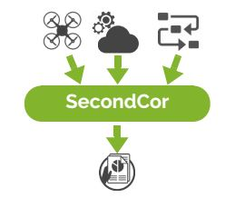

PREMIOS
La inovación y utilidad del proyecto ha sido reconocida con varios galardones en diferentes lanzaderas de empresas desde su creación.
.png)

Soluciones para drones profesionales
Desarrollamos soluciones para drones profesionales con el objetivo de automatizar la operación de drones profesionales sin que sea necesario que el usuario disponga de capacidades especiales.
Secondccor ofrece una solución completa que facilita el uso profesional de drones en aplicaciones de construcción, mineríea, áridos y topografía, asegurando la captura de imágenes de calidad sin necesidad de conocimientos ni habilidades especiales y obteniendo sólo la información necesaria con costes y riesgos operativos reducidos. Asimismo, permite que el procesado de mapas sea un negocio escalable al eliminar la fase de procesado manual.

Ingenio, experiencia y profesionalidad se unen para crear un software que dotará a los drones de mayor autonomía y podrán ser usados en diferentes ámbitos, especialmente en la obra pública y la minería, donde podrán realizar un trabajo que hasta el momento depende de profesionales para llevarlo a cabo.
SecondCor se posiciona como un proyecto innovador que promete revolucionar el mercado de la inteligencia artificial, prueba de ello son algunos premios conseguidos como empresa innovadora.
No obstante, la evolución de la empresa puede ir más allá gracias a la inversión en SecondCor, es por ello que la startup española mantiene un trabajo constante para poder ofrecer a los inversores unos beneficios rentables gracias al futuro de la inteligencia artificial.
Ver MásSecondCor se centra en realizar las labores necesarias de captura de imágenes y generación de mapas e informes aplicados a los sectores de obra civil, minería y áridos, construcción e inspección.
Convierte las tareas previas a la operación en simples y amigables
Permite realizar vuelos óptimos consiguiendo así mejorar la calidad de las imágenes capturadas
Permite asegurar que las imágenes cubren la calidad requerida por el usuario
Facilita la transparencia en el proceso de obtención de capturas e información relevante para el usuario
La inovación y utilidad del proyecto ha sido reconocida con varios galardones en diferentes lanzaderas de empresas desde su creación.
Innovación, tecnología, eficiencia y emprendimiento son las claves que definen a los a los promotores del proyecto
Daniel Gutierrez: Es Ingeniero en Telecomunicaciones por la Universidad Politécnica de Valencia y Máster en Robótica y Automática por la Universidad Miguel Hernández. Cuenta con experiencia profesional de 10 años dentro del sector drone desarrollando todo tipo de sistemas. Además lideró la primera certificación del software de un drone en Europa.
Antonio Bedmar:Es Ingeniero Aeronáutico por la Universidad Politécnica de Madrid y Máster en Mecánica del Vuelo por la Universidad de Cranfield. Desde 2008 ha trabajado dentro del sector drone en diferentes ámbitos como en aplicaciones comerciales o militar. Actualmente es Senior UAV Systems Engineer en Altran ME en Abu Dhabi.

"This Company created an e-commerce site with the tools to make our business a success, with innovative ideas we feel that our site has unique elements that make us stand out from the crowd."

Daniel Guitierrez CEO
"This Company created an e-commerce site with the tools to make our business a success, with innovative ideas we feel that our site has unique elements that make us stand out from the crowd."

Antonio Bedmar CEO
Para más información sobre el proyecto o asesoramiento especializado, no dude en ponerse en contacto con nosotros.